CURATED COLLECTION
記憶體
Ram 運算時暫存用
一、什麼是 RAM？
記憶體（Random Access Memory，簡稱 RAM），中文稱為「隨機存取記憶體」，是電腦內部非常重要的硬體零件之一。
RAM 主要負責暫時儲存電腦正在執行的程式與使用中的資料，讓中央處理器（CPU）可以快速存取，提高電腦的運作效率。
例如，當我們開啟瀏覽器、編輯文件、玩遊戲或執行軟體時，電腦會將部分需要使用的資料載入 RAM，方便 CPU 快速處理。
RAM 屬於揮發性記憶體，一般在電腦關閉電源後，裡面的資料便會消失。
二、RAM 的主要功能
- 暫時儲存資料： 保存目前正在執行的程式與相關資料。
- 加快資料存取： 讓 CPU 快速取得運算需要的資訊。
- 支援多工處理： 讓電腦同時開啟瀏覽器、文件及其他應用程式。
- 提升系統流暢度： 記憶體容量足夠時，可以減少因記憶體不足造成的卡頓。
- 支援大型程式： 例如遊戲、影片剪輯、3D 設計及部分 AI 應用程式。
三、RAM 的主要構造
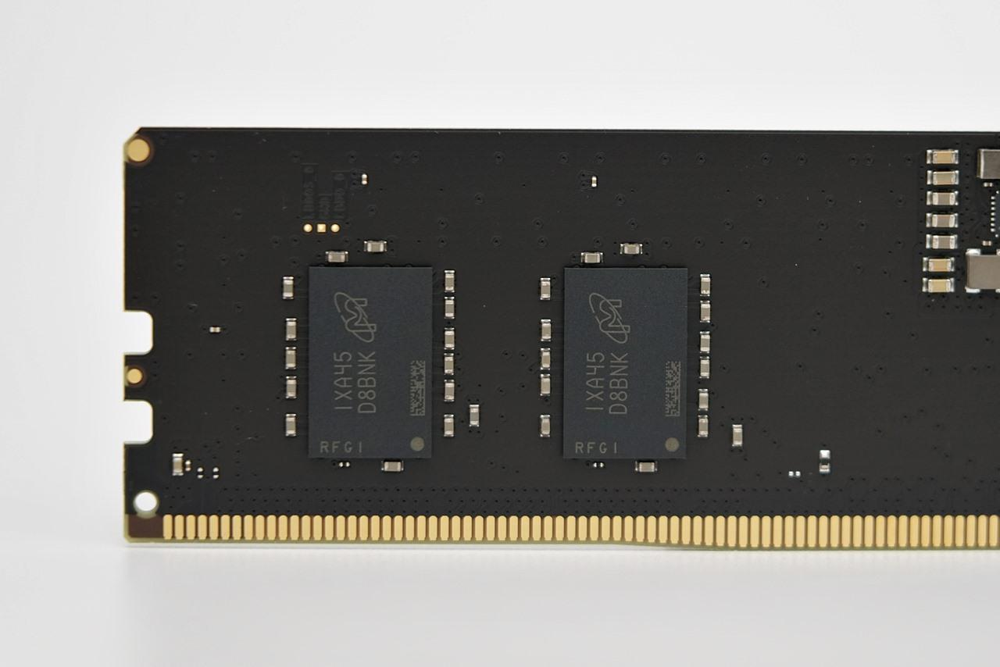 |
1. 記憶體晶片（Memory Chips） 負責儲存二進位資料，是 RAM 最主要的組成部分。 |
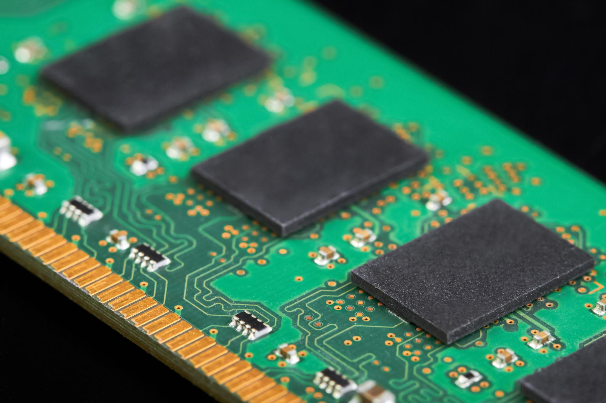 |
2. 電路板（PCB） 用來固定記憶體晶片與其他電子元件，並提供資料及電力傳輸線路。 |
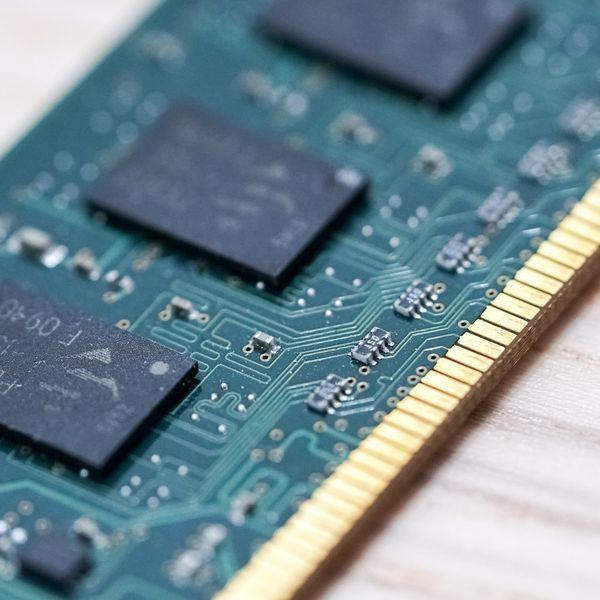 |
3. 金手指（Gold Fingers） 位於記憶體模組底部，負責與主機板記憶體插槽接觸，進行電力與訊號傳輸。 |
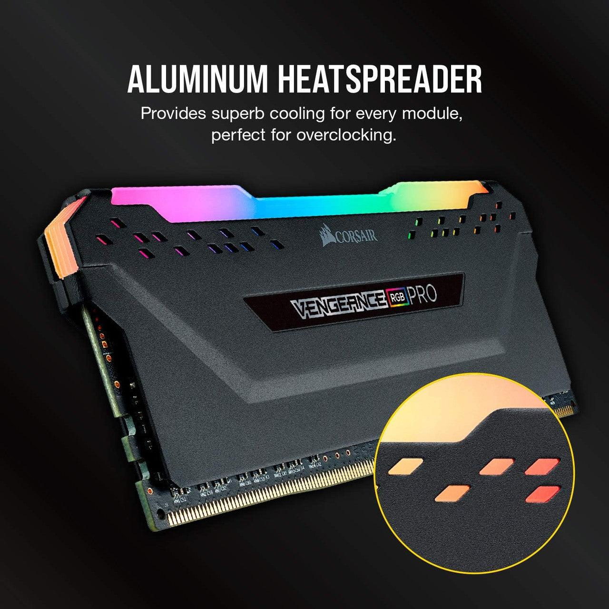 |
4. 散熱片（Heat Spreader） 部分記憶體模組具有金屬散熱片，協助散熱並保護元件。 |
四、RAM 的主要種類
1. 依記憶體世代分類
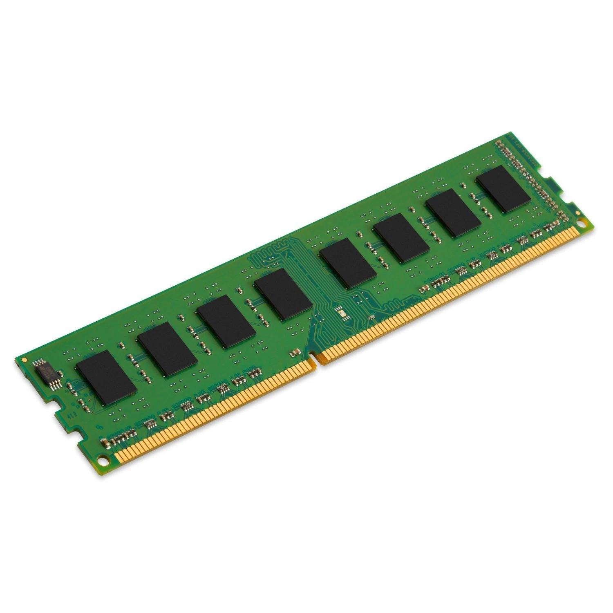 |
DDR3 記憶體 較舊的記憶體規格，主要使用於早期桌上型與筆記型電腦。 |
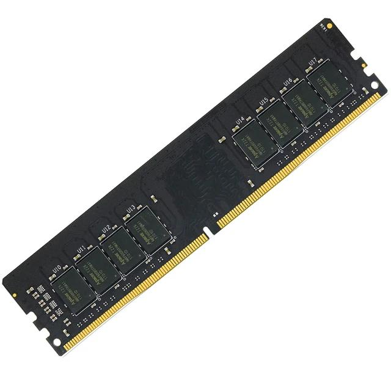 |
DDR4 記憶體 廣泛應用於許多桌上型與筆記型電腦，技術成熟，具有良好的效能及成本表現。 |
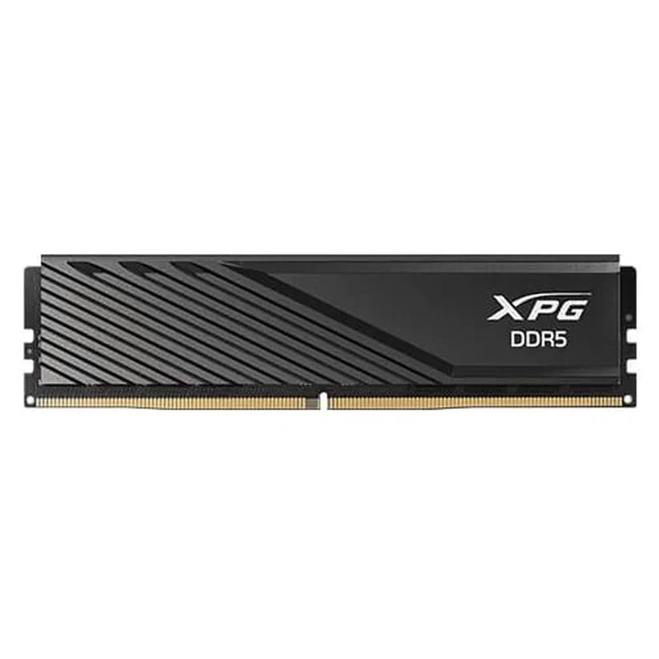 |
DDR5 記憶體 較新世代的主流記憶體規格，具有更高的資料傳輸速率，適合新型電腦平台。 |
2. 依記憶體外型分類
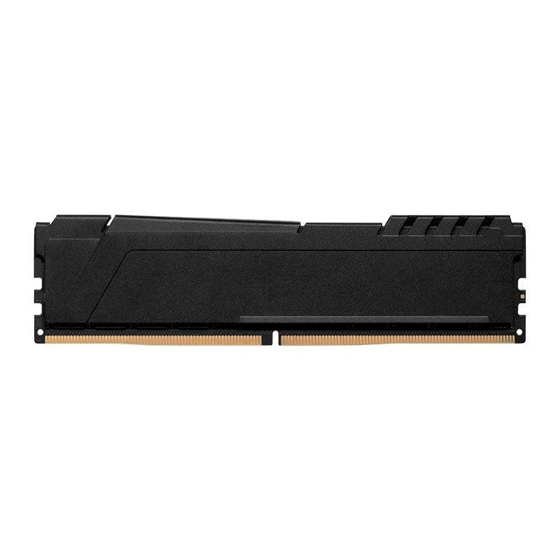 |
DIMM 記憶體 主要使用於桌上型電腦，模組尺寸較長。 |
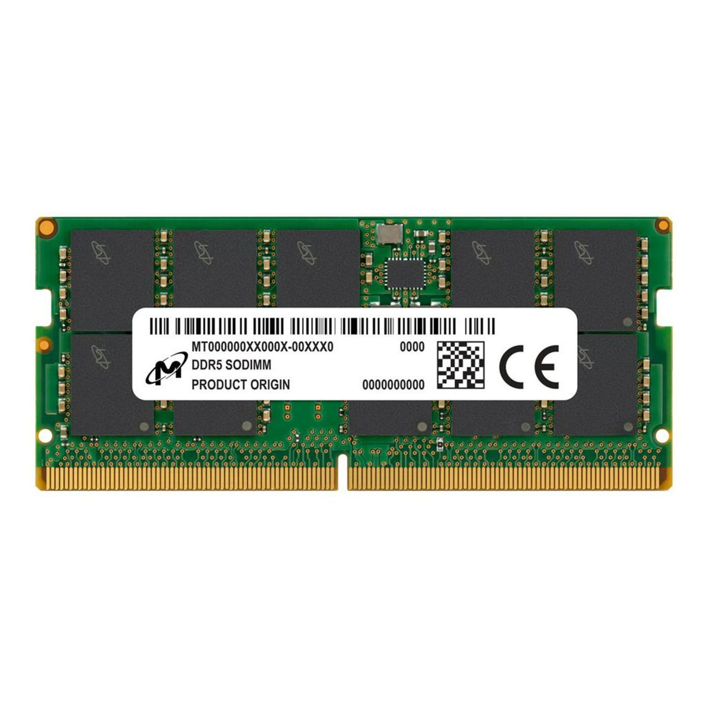 |
SO-DIMM 記憶體 主要使用於筆記型與部分迷你電腦，尺寸較小。 |
部分輕薄型筆記型電腦使用焊接式記憶體或其他特殊規格，因此不一定能自行升級。
五、RAM 的重要規格
規格 |
說明 |
|---|---|
容量（GB） |
決定可暫時儲存多少資料 |
傳輸速率（MT/s） |
影響記憶體資料傳輸能力 |
延遲（CL） |
反映部分記憶體存取時序 |
DDR 世代 |
例如 DDR4、DDR5 |
通道數 |
影響記憶體資料傳輸頻寬 |
電壓（V） |
記憶體運作所需的電壓 |
ECC |
可偵測並修正部分記憶體資料錯誤 |
常見 RAM 容量與用途
容量 |
常見使用需求 |
|---|---|
4 GB |
舊型電腦、基本輕量用途 |
8 GB |
基本文書、上網 |
16 GB |
一般多工、主流遊戲 |
32 GB |
大型遊戲、影片剪輯、程式開發 |
64 GB 以上 |
專業創作、虛擬機、大型資料處理 |
以上為一般參考，實際需求取決於作業系統、軟體及使用方式。
六、單通道與雙通道記憶體
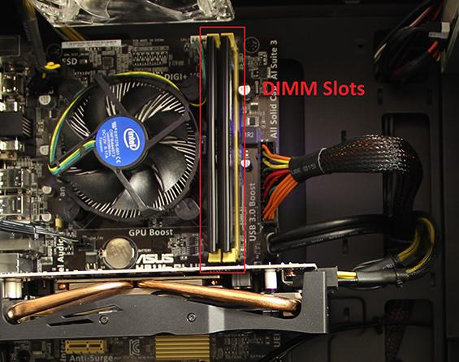 |
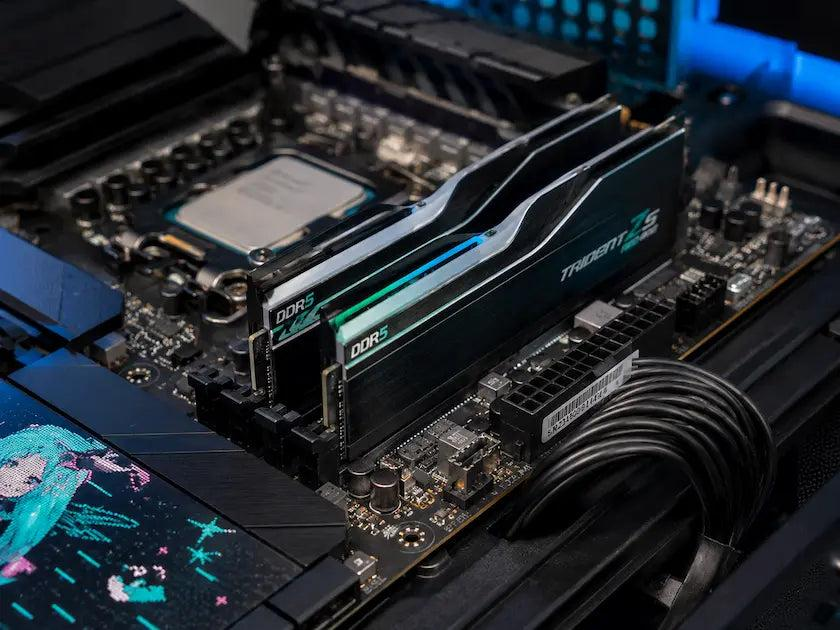 |
1. 單通道（Single Channel） 使用一個記憶體通道傳輸資料，頻寬通常低於雙通道模式。 |
2. 雙通道（Dual Channel） 使用兩個記憶體通道同時傳輸資料，可以提高記憶體頻寬，對部分遊戲與應用程式有幫助。 |
例如，需要 32 GB 記憶體時，可以選擇：
- 1 條 32 GB：通常使用單通道模式。
- 2 條 16 GB：在支援雙通道的主機板上正確安裝後，可啟用雙通道模式。
雙通道能改善記憶體頻寬，但實際效能仍取決於 CPU、主機板及軟體。
七、RAM 與 SSD／HDD 的差別
比較項目 |
RAM 記憶體 |
SSD／HDD 儲存裝置 |
|---|---|---|
主要功能 |
暫時儲存使用中的資料 |
長期保存檔案 |
存取速度 |
非常快 |
通常較慢 |
斷電後資料 |
通常消失 |
保留 |
常見容量 |
8～64 GB |
500 GB～數 TB |
主要用途 |
執行程式、多工作業 |
儲存系統、照片、影片 |
RAM 就像是「工作桌」，SSD 或 HDD 則像是「檔案櫃」。
工作桌越大，就越能同時擺放多份正在使用的資料；檔案櫃則負責長期保存資料。
八、選購 RAM 的注意事項
- 確認主機板相容性： DDR4 與 DDR5 不能直接互換，必須使用支援相應規格的主機板。
- 選擇適當容量： 一般使用者可考慮 16 GB，需要較多多工或遊戲效能可考慮 32 GB。
- 注意傳輸速率： 例如 DDR5-5600、DDR5-6000，應確認 CPU 與主機板的支援情況。
- 考慮雙通道配置： 通常建議選購成套的兩條記憶體。
- 確認安裝空間： 高散熱片的 RAM 可能與大型 CPU 散熱器互相干涉。
- 注意系統支援容量： 確認主機板與作業系統支援的最大記憶體容量。
九、RAM 與其他硬體的關係
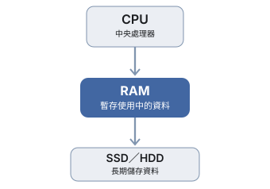
CPU、RAM 與儲存裝置的簡化資料存取示意圖，實際資料可雙向傳輸。
當使用者開啟應用程式時，電腦通常會從 SSD 或 HDD 讀取所需資料，並將部分資料載入 RAM，讓 CPU 能更快速地處理。
包裝內容物
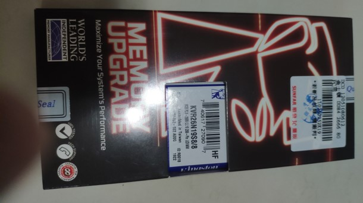
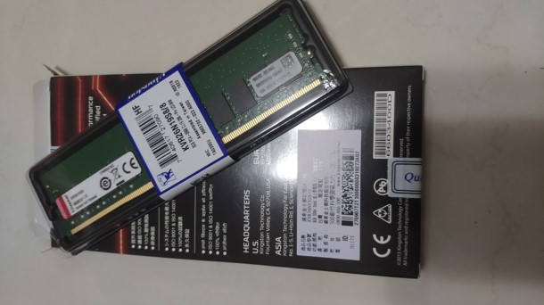
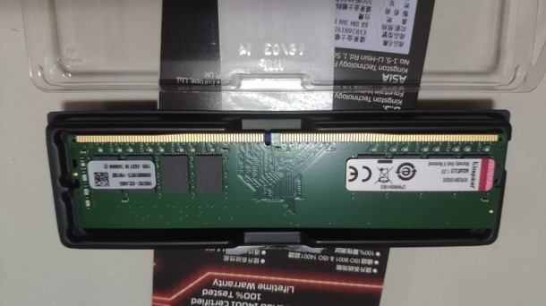